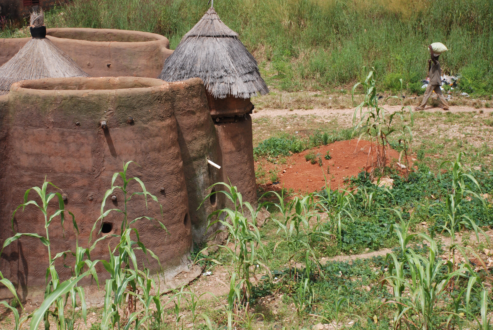
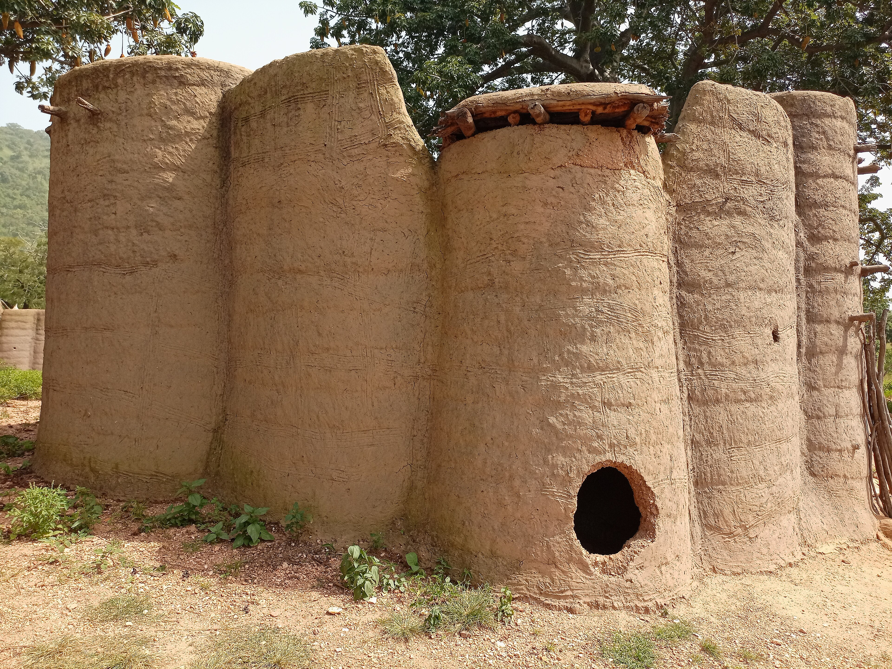

Inscrivez-vous avec votre numéro
Pas de mot de passe à retenir : un code arrive par SMS à chaque connexion.
Votre agent ATDA valide votre fiche
Il confirme votre identité et vos parcelles : vous devenez éligible aux programmes d'appui.

Tata Somba, Baliola. Photo : Martin Wegmann, CC BY-SA 3.0, Wikimedia Commons
Inscrivez-vous avec votre numéro. Suivez chaque parcelle du semis à la récolte, recevez les alertes de votre agent ATDA et vendez votre récolte au bon prix.
Fermes du POC par département, du nord au sud. Données de démonstration, non officielles.
12 départements, 77 communes, 13 filières prioritaires
Démonstration du POCComme dans une Tata Somba : on entre par le bas, on vit à l'étage, on engrange sur la terrasse.

Pas de mot de passe à retenir : un code arrive par SMS à chaque connexion.
Il confirme votre identité et vos parcelles : vous devenez éligible aux programmes d'appui.
Dessinez votre parcelle du bout du doigt : votre agent la valide, et chaque campagne est suivie jusqu'à la récolte.
Notez la date et la variété semée : l'application cale vos rappels et vos conseils sur votre propre calendrier.
Sous terre, le grain gonfle et la racine plonge. En surface, vous recevez les alertes de ravageurs et de pluie de votre département.
Feuille tachée, épi suspect ? Une photo suffit pour un premier avis, revu par un agronome quand le doute subsiste.
Déclarez votre récolte, publiez une offre sur le marché et rencontrez acheteurs et transformateurs en direct.
Alertes, conseils, appuis et marché arrivent au même endroit, campagne après campagne.
Saisissez au champ : tout part dès que le réseau revient.
Français, fon, bariba, yoruba et dendi ; les traductions sont en cours de validation.
Rien n'est partagé avec un organisme de crédit sans votre accord, et vous pouvez le retirer à tout moment.
Un journal non modifiable enregistre qui a consulté quoi, dans le cadre de la loi béninoise 2017-20 sur le numérique.
L'application s'ouvre dans le navigateur de n'importe quel téléphone récent, sans rien installer. Les alertes sont prévues aussi par SMS pour les téléphones simples.
Vous pouvez saisir hors connexion. Vos données sont gardées sur le téléphone et envoyées automatiquement au retour du réseau.
Vous, votre agent ATDA et les responsables des programmes qui vous concernent. Un organisme de crédit ne les voit qu'avec votre accord.
Une fois votre fiche validée, postulez aux programmes ouverts depuis votre espace. Vous êtes prévenu de la décision et pouvez la contester.
Chaque réponse cite la fiche technique dont elle vient ; ces fiches seront relues par l'INRAB et les ATDA avant la mise en service. Pour tout dosage, l'assistant vous oriente vers votre agent.
Une plateforme, tous les acteurs de la filière. Producteur ou agent ATDA : votre téléphone suffit pour commencer.
Gérez vos parcelles, recevez conseils et alertes, touchez vos appuis et vendez votre récolte.
Validez les fiches, alertez tout un département en un message et tracez chaque remise d'appui.
Suivez vos membres et regroupez l'offre pour peser sur le marché.
Pilotez avec des indicateurs à jour, sélectionnez les bénéficiaires en transparence, auditez chaque accès.
Se connecter